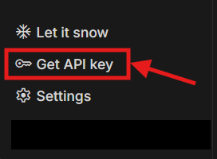
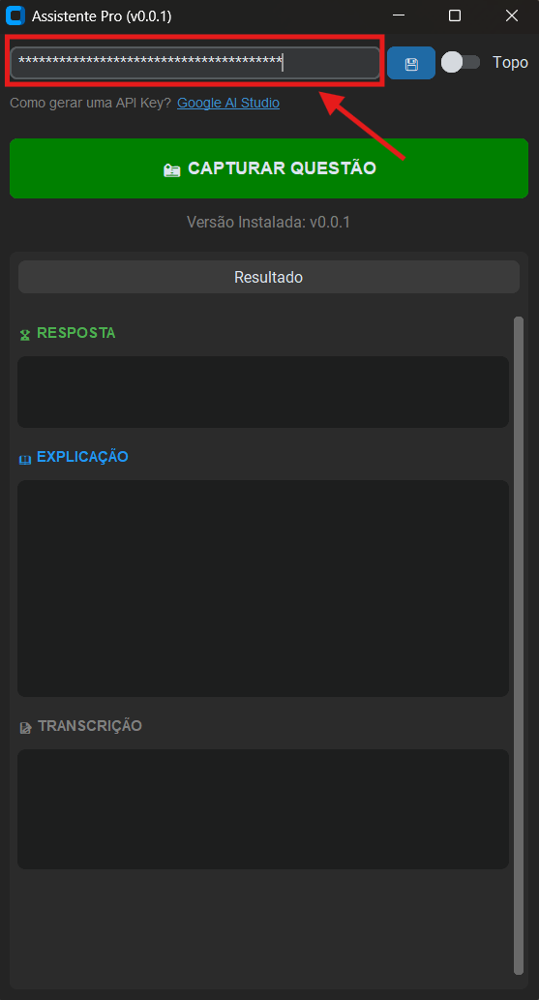

Acesse o Google AI Studio. No menu lateral ou na tela principal, clique no botão "Get API Key" (Obter chave de API).
Na tela de gerenciamento de chaves, procure e clique no botão azul "Criar chave de API".

Selecione a opção "Criar chave de API em novo projeto". Digite um nome para seu projeto e para a chave, e confirme clicando em "Criar Chave".

Sua chave será gerada. Clique no ícone de cópia ou selecione o código (começa com AIza...) e copie para sua área de transferência.
Abra o Assistente Pro. Cole a chave no campo indicado e clique no botão Salvar (💾). Pronto! O programa já pode analisar suas questões.
